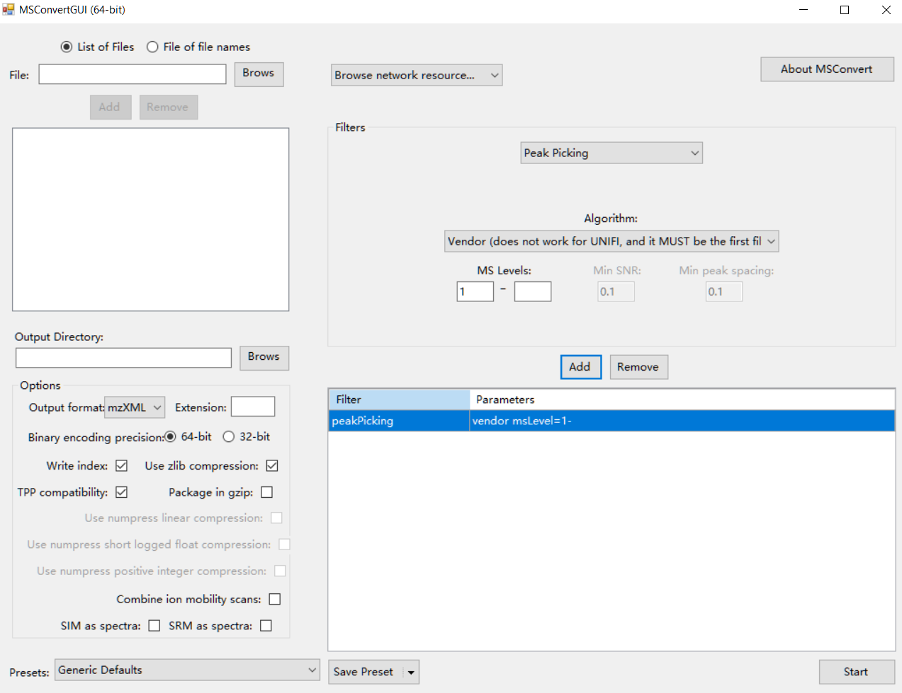
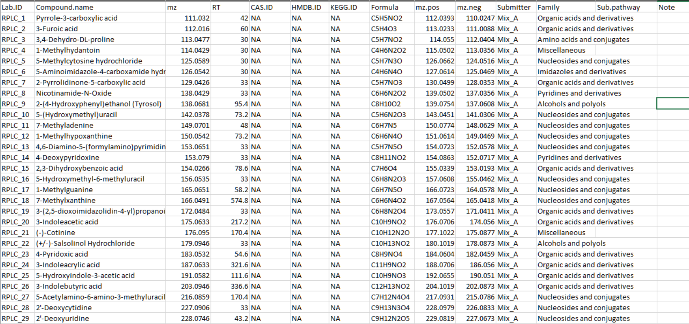
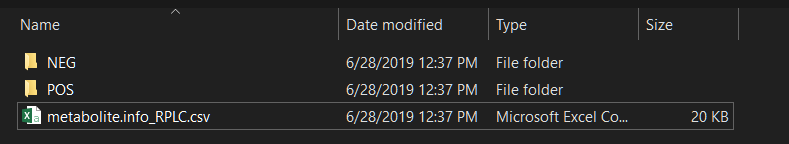

Construct in-house MS2 datbase using metid
Xiaotao Shen (https://www.shenxt.info/)
Created on 2020-03-28 and updated on 2021-12-22
Source:vignettes/database_construction.Rmd
database_construction.RmdIf you have in-house standards which have been acquired with MS2 spectra data, then you can construct the in-house MS2 spectra databases using the metid package.
There are no specific requirements on how to run the LC/MS data for users. As the in-house database construction in metid is used for users to get the in-house databases for themselves (including m/z, retention time and MS/MS spectra of metabolites, for level 1 annotation (Sumner et al., 2007)), so the users just need to run the standards using the same column, LC-gradient, and MS settings with their real samples in the lab
Data preparation
Firstly, please transform your raw standard MS data (positive and negative modes) to mzXML format using ProteoWizard. The parameter setting is shown in the figure below:

Data organization
Secondly, please organize your standard information as a table, and output it in a csv or xlsx format. The format of standard information can refer to our demo data in demoData package.
From column 1 to 11, the columns are “Lab.ID”, “Compound.name”, “mz”, “RT”, “CAS.ID”, “HMDB.ID”, “KEGG.ID”, “Formula”, “mz.pos”, “mz.neg”, “Submitter”, respectively. It is OK if you have other information for the standards. As the demo data show, there are other additional information, namely “Family”, “Sub.pathway” and “Note”.
Lab.ID: No duplicated.
mz: Accurate mass of compounds.
RT: Retention time, unit is second.
mz.pos: Mass to change ratio of compound in positive mode, for example, M+H. You can set it as NA.
mz.neg: Mass to change ratio of compound in negative mode, for example, M-H. You can set it as NA.
Submitter: The name of person or organization. You can set it as NA.

Then create a folder and put your mzXML format datasets (positive mode in ‘POS’ folder and negative mode in ‘NEG’ folder) and compound information in it. The mzXML file should have the collision energy in the name of each file. For example, test_NCE25.mzXML.
The names of the mzXML files should be like this: xxx_NCE25.mzXML.

Run construct_database() function
Here we use the demo data from demoData package to show how to use the construct_database() function to construct database.
We first prepare dataset.
Download the data here. and then put all of them in the “database_construction” folder.
Then there will be a folder named as database_construction in your work directory like below figure shows:
 Then we run
Then we run construct_database() function and then we can get the database.
library(metid)
new.path <- file.path("./database_construction")
test.database <- construct_database(
path = new.path,
version = "0.0.1",
metabolite.info.name = "metabolite.info_RPLC.csv",
source = "Michael Snyder lab",
link = "http://snyderlab.stanford.edu/",
creater = "Xiaotao Shen",
email = "shenxt1990@163.com",
rt = TRUE,
mz.tol = 15,
rt.tol = 30,
threads = 5
)
#> Reading metabolite information...
#> Reading positive MS2 data...
#> Reading MS2 data...
#> Processing...
#>
|
| | 0%
|
|============== | 20%
|
|============================ | 40%
|
|========================================== | 60%
|
|======================================================== | 80%
|
|======================================================================| 100%
#>
#> OK
#> Reading negative MS2 data...
#> Reading MS2 data...
#> Processing...
#>
|
| | 0%
|
|============== | 20%
|
|============================ | 40%
|
|========================================== | 60%
|
|======================================================== | 80%
|
|======================================================================| 100%
#>
#> OK
#> Matching metabolites with MS2 spectra (positive)...
#> OK
#> Matching metabolites with MS2 spectra (negative)...
#> OK
#> All done!The arguments of construct_database() can be found here construct_database().
test.database is a databaseClass object, you can print it to see its information.
test.database
#> -----------Base information------------
#> Version: 0.0.1
#> Source: Michael Snyder lab
#> Link: http://snyderlab.stanford.edu/
#> Creater: Xiaotao Shen ( shenxt1990@163.com )
#> With RT information
#> -----------Spectral information------------
#> There are 14 items of metabolites in database:
#> Lab.ID; Compound.name; mz; RT; CAS.ID; HMDB.ID; KEGG.ID; Formula; mz.pos; mz.neg; Submitter; Family; Sub.pathway; Note
#> There are 170 metabolites in total
#> There are 113 metabolites in positive mode with MS2 spectra.
#> There are 112 metabolites in negative mode with MS2 spectra.
#> Collision energy in positive mode (number:):
#> Total number: 2
#> NCE25; NCE50
#> Collision energy in negative mode:
#> Total number: 2
#> NCE25; NCE50Note:
test.databaseis only a demo database (metIdentifyClass object). We will don’t use it for next metabolite identification. Then please save this database in you local folder, please note that the saved file name and database name must be same. For example:
save(test.database, file = "test.database")If you save the
test.databaseas a different name, it will be a error when you use it.
MS1 database
If you do not have MS2 data, you can also use construct_database() function to construct MS1 database.